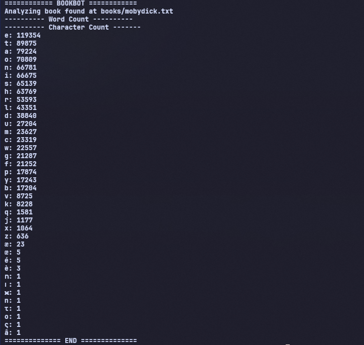
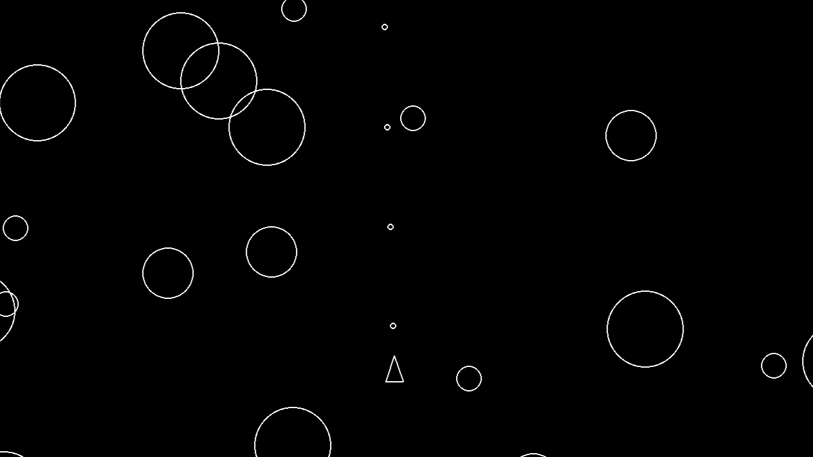

illustration & digital art
i love exploring character designs, fan art, and the occasional original piece i actually finish. i work primarily in clip studio paint, but i'm always trying new things!
hello! my name's sadia and I'm a computing applications student at texas tech university with a habit of getting way too invested in things I find interesting. most of that right now is illustration, but it also spills into pulling games apart and writing code just to see what happens.
eventually: front-end web dev! currently: learning python and some C++ just so i can understand how to mod my favorite video games better :D
i love exploring character designs, fan art, and the occasional original piece i actually finish. i work primarily in clip studio paint, but i'm always trying new things!
i started taking games apart to see how they work, then putting them back together with new stuff in them, all the way back in highschool! it's equal parts creative project and accidental reverse-engineering lesson
mostly python, with HTML and CSS entering the mix more seriously lately, and slowly but surely working on C++ as well. i've been mostly following online courses but when i do tackle a small project, i try not to break anything too badly along the way!

a python command-line tool that analyzes a text file, counting total words and character frequency, then prints a sorted report to the terminal!
view on github →
a pygame recreation of the classic asteroids arcade game, with asteroids that split apart on hit!
view on github →